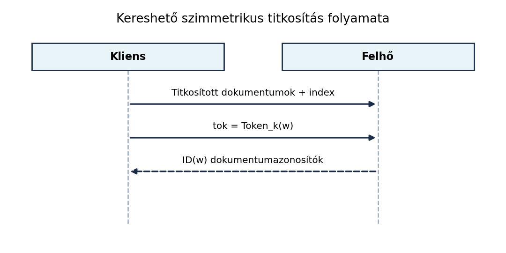

Motiváció: miért akarunk titkosított adatbázisban keresni?
Egy orvosi szoftvert képzelünk el, amely a betegek dokumentumait a felhőben tárolja. A szabályozás miatt a fájlokat titkosítani kell, de az orvosnak meg kell tudnia keresni az összes olyan dokumentumot, amelyben egy adott kulcsszó szerepel. A naiv megoldás – a teljes adatbázis letöltése és helyi visszafejtése – működik, de minden keresésnél az összes adatot le kellene tölteni, ami nem skálázható. A cél tehát az, hogy a felhő anélkül tudjon keresni, hogy megtanulná a keresőszót vagy az adatok tartalmát. Ezt a feladatot oldja meg a kereshető szimmetrikus titkosítás (searchable symmetric encryption, SSE), illetve az ennél erősebb privát visszakeresési módszerek.
A kereshető titkosítás mögött az a megfigyelés áll, hogy ahelyett, hogy a dokumentumok szövegét titkosítanánk úgy, hogy a felhőben keresni lehessen bennük, egy indexet építünk, amely a kulcsszavakat dokumentumazonosítókhoz rendeli. A kliens ezt az indexet is titkosítja, de kereséskor csak egy keresőtokent (search token) küld a felhőnek, amelyből a felhő nem tudja meg a kulcsszót. Az alábbi protokollábra ezt a folyamatot mutatja.

A kliens először a titkosított dokumentumhalmazt és a hozzá tartozó titkosított indexet tölti fel. Kereséskor a kliens a kulcsszóhoz kiszámol egy keresőtokent, és ezt elküldi. A felhő az indexben megkeresi a tokenhez tartozó dokumentumazonosítókat, és visszaadja a kliensnek, aki ezután letölti és visszafejti a megfelelő dokumentumokat.
Definíció. Egy kereshető szimmetrikus titkosítás (SSE) négy algoritmusból áll: - : kulcsgenerálás, visszaad egy titkos kulcsot; - : a dokumentumhalmaz és a belőle épített index titkosítása, kimenete a titkosított dokumentumok és a titkosított index; - : a kulcsszóhoz előállít egy keresőtokent; - : a felhő által futtatott algoritmus, amely a tokenhez tartozó dokumentumazonosítók halmazát adja vissza.
Ebben a modellben a felhő nem kapja meg a kulcsot, és a dokumentumok tartalmát sem ismeri. A keresés helyességére megköveteljük, hogy ha , akkor a pontosan azokat a dokumentumazonosítókat adja vissza, amelyek tartalmazzák -t.
Egy egyszerű, de tanulságos konstrukció a következő. A kliens minden dokumentumot szabványos AEAD titkosítással rejtjelez, például AES-GCM-mel. Ezután felépít egy indexet: minden kulcsszóhoz két kulcsot származtat: az címkét és a kulcsot, és az párokat tárolja, ahol a -t tartalmazó dokumentumok azonosítóinak halmaza (a listákat azonos hosszra kitöltve). Kereséskor a kliens a tokent küldi el: a felhő a címkével kiolvassa az indexből a hozzá tartozó titkosított listát, és a kulccsal csak ezt az egy listát tudja visszafejteni. (A legegyszerűbb, didaktikai változatban a listák nyíltak, így a felhő már feltöltéskor látná az index szerkezetét – a találatszámokat és a közös dokumentumokat; a valódi SSE ezt is titkosítja, ahogy itt.) A HMAC pszeudovéletlen kimenete miatt a felhő a tokenből önmagában nem tudja meg a kulcsszót, de – mint látni fogjuk – a tokenek determinisztikus volta komoly szivárgást okoz. A felhő a keresés előtt csak a méreteket (kulcsszavak száma, a kitöltött listák hossza) látja; a találati halmazt és a közös dokumentumokat csak a keresésekkel együtt tanulja meg.
Tegyük fel, hogy négy dokumentumunk van: - : {alma, banán} - : {alma, citrom} - : {banán, dinnye} - : {citrom}
A kliens kiválaszt egy kulcsot, és minden kulcsszóra kiszámolja a tokent. A konkrét tokenértékeket nem írjuk ki, mert azok a kulcstól függnek, de az index szerkezete így néz ki:
| token | dokumentumazonosítók |
|---|---|
Ha az orvos az „alma” kulcsszóra keres, a kliens elküldi -t. A felhő megnézi az indexet, és visszaadja a halmazt. A kliens letölti és titkosított változatát, visszafejti, és megkapja a találatokat. A felhő közben annyit tud, hogy az adott tokenhez két dokumentum tartozik, és hogy a kliens ezt a tokent használta. Ha később újra „alma”-ra keres, a felhő ugyanazt a tokent látja, tehát megtudja, hogy a két keresés ugyanarra a kulcsszóra vonatkozott. Ez a keresési minta (search pattern). A visszaadott dokumentumazonosítók pedig a hozzáférési mintát (access pattern) alkotják.
A kereshető titkosítás biztonságát nem úgy kell mérni, mint egy hagyományos titkosításét. A szerver ugyanis a keresés során nemcsak titkosított adatokat lát, hanem a tokent és a válaszként visszaadott azonosítókat is. Ennek a megfigyelhető információnak a leírását szivárgási profilnak (leakage profile) nevezzük.
Definíció. Legyen egy dokumentumhalmaz, és tekintsük a kulcsszavakra adott kereséseket. A keresési minta annak ismerete, hogy mely keresések vonatkoztak ugyanarra a kulcsszóra; formálisan az reláció. A hozzáférési minta a keresések során visszaadott dokumentumazonosító-halmazok sorozata: . A szivárgási profil minden egyéb megfigyelhető metaadatot is tartalmazhat, például az egyes válaszok méretét vagy a keresések időpontját.
A fenti HMAC-alapú konstrukcióban a keresési minta közvetlenül adódik: ugyanaz a token ugyanazt a kulcsszót jelenti. A hozzáférési minta szintén a felhő rendelkezésére áll. A dokumentumok tartalmát a szerver nem ismeri, de ez a két minta önmagában is elegendő lehet ahhoz, hogy egy támadó bizonyos esetekben rekonstruálja a kulcsszavakat.
Továbbvitt eredmény. A szivárgási szemlélet – vagyis az, hogy minden titkosításnál és protokollnál pontosan meg kell fogalmazni, mit figyelhet meg a szerver vagy a támadó – a könyv záró részében is visszaköszön: a A kriptográfia fogalmi térképe és döntési fája alfejezetben, valamint a Továbblépés: kutatás, gyakorlat és pályák a kriptográfiában alfejezetben.
A keresési és hozzáférési mintából többféle támadás építhető.
Gyakorisági támadás. A felhő megszámolhatja, hogy az egyes tokenekhez hány dokumentum tartozik. Ha a keresett kulcsszavak eloszlása nyilvános vagy becsülhető, a tokenek gyakorisága alapján azonosíthatók. Például ha egy tokenhez tartozó találati halmaz mérete pontosan megegyezik egy ritka betegség előfordulási gyakoriságával, a támadó nagy biztonsággal következtethet a kulcsszóra.
Injekciós támadás. Sokkal erősebb aktív támadás: ha a támadó maga is feltölthet dokumentumokat az adatbázisba, akkor elhelyezhet egy olyan dokumentumot, amely egy általa választott, ritka kulcsszót tartalmaz. Amikor a kliens erre a kulcsszóra keres, a támadó dokumentuma megjelenik a válaszban. Ebből a támadó megtanulja, hogy az adott token melyik kulcsszóhoz tartozik. Ezt a módszert file injection támadásnak is nevezik, és azt mutatja, hogy a gyakorlati SSE-rendszereknél a szivárgási profilt nagyon óvatosan kell kezelni.
Hozzáférési minta alapú támadás. Ha a támadó ismeri az adatbázis egy részét, például nyilvános dokumentumokat, akkor a visszaadott dokumentumazonosítók halmazából következtethet a keresőszóra. Tegyük fel, hogy a támadó tudja, hogy és is tartalmazza az „alma” szót, de más közös kulcsszót nem. Ha egy keresésre a válasz , a támadó nagy valószínűséggel az „alma” keresését látja.
Ezek a támadások nem az adott kriptográfiai primitív törését jelentik, hanem azt a felismerést, hogy a kereshető titkosítás eredendően metaadatokat szivárogtat. A tervezés során ezért nem elég azt kérdezni, hogy a felhő meg tudja-e fejteni a kulcsszót; azt is meg kell kérdezni, hogy a szivárgó metaadatok elfogadhatók-e az adott alkalmazásban.
A gyakorlatban gyakran próbálkoznak olyan megoldásokkal, amelyek látszólag egyszerűen teszik lehetővé a keresést titkosított adatokon, de valójában súlyos szivárgást okoznak.
Determinisztikus titkosítás. Ha egy titkosítás ugyanahhoz az üzenethez mindig ugyanazt a rejtett szöveget adja, akkor a felhő egyenlőségtesztet tud végezni, ami hasznos lehet keresésre. Az ilyen séma azonban nem lehet szemantikailag biztonságos (IND-CPA), mert a támadó két üzenet közül meg tudja állapítani, hogy melyiket titkosították, ha ismeri a lehetséges rejtett szövegeket. Ráadásul a gyakoriságelemzés is alkalmazható: ha sok rekordban ugyanaz a titkosított érték ismétlődik, a támadó a nyílt szövegek eloszlása alapján rekonstruálhatja az értékeket. Például egy titkosított betegrekordokból álló adatbázisban a diagnóziskódok determinisztikus titkosítása esetén a leggyakoribb rejtett szöveg valószínűleg a leggyakoribb diagnózist jelöli.
Sorrendmegőrző titkosítás (order-preserving encryption, OPE). Az OPE megőrzi a nagyságrendet: ha , akkor a hozzájuk tartozó rejtett szövegek is ebben a sorrendben vannak. Ez lehetővé teszi a tartománylekérdezéseket, de a szivárgás extrém: a teljes rendezés kiszivárog. A kutatások kimutatták, hogy a sorrendmegőrző titkosítás sok esetben gyakorlatilag visszafejthető a rejtett szövegek eloszlásából, különösen akkor, ha a nyílt szövegek eloszlása ismert vagy becsülhető. Emiatt az OPE-t ma már nem ajánlják biztonságos felhős adatbázisokhoz; a szakirodalomban ismert támadások egy része konkrét rendszerekben is sikeres volt.
Mindkét megközelítés arra tanít, hogy a tulajdonságmegőrző titkosítás (property-preserving encryption) használata csak akkor fogadható el, ha a szivárgási profilt pontosan modellezzük, és az alkalmazás ezt elviseli.
A kereshető titkosítás hozzáférési mintát szivárogtat. Létezik ennél erősebb feladat: a privát információ-visszakeresés (private information retrieval, PIR). Itt a cél az, hogy a kliens úgy kérjen le egy rekordot egy nyilvános vagy titkosított adatbázisból, hogy a szerver még azt se tudja meg, melyik rekordot kérte. A triviális megoldás – a teljes adatbázis letöltése – elrejti a hozzáférést, de kommunikációs költsége . A PIR célja ennél kevesebb kommunikációval elérni ugyanezt.
Információelméleti PIR több szerverrel. A klasszikus konstrukció legalább két, egymással nem összejátszó szervert feltételez. Tekintsünk egy bites adatbázist, amelyet vektorként írunk le, és a kliens az bitet szeretné megtudni. A kliens választ egy egyenletesen véletlen maszkot, majd elküldi az első szervernek a lekérdezést, a másodiknak pedig a lekérdezést, ahol az -edik egységvektor. Mindkét szerver kiszámítja a lekérdezés és az adatbázis modulo 2 skaláris szorzatát: A kliens ezután kiszámolja: Így megkapja a kívánt bitet. Egyik szerver sem tudja meg -t, mert a lekérdezés eloszlása mindkét szerver szempontjából egyenletes véletlen, független -től. A konstrukció azonban kommunikációt igényel, tehát ebben az alapváltozatban nem takarékosabb a triviális letöltésnél. Több szerverrel és okosabb kódolással a kommunikáció csökkenthető, de a több szerveres PIR alapötlete ez: a véletlen maszk biztosítja, hogy egyetlen szerver se tudja, mit kérdeztek.
Az alábbi ábra a 3. feladat adataival bitpozíciónként követi a két lekérdezést: és csak az 5. oszlopban tér el, ezért a két paritás XOR-ja éppen .
Számítási PIR. Egyetlen szerverrel is elérhető a PIR, ha homomorfikus titkosítást használunk – például a Paillier-rendszert, amelyet a Homomorf titkosítás: Paillier és FHE alfejezetben ismertünk meg. Tegyük fel, hogy az adatbázis elemből áll: . A kliens a elemet szeretné lekérdezni. Készít egy titkosított vektort , ahol: A Paillier-rendszer additív homomorf tulajdonsága miatt a szerver ki tudja számítani: ahol a homomorfikus skaláris szorzást jelöli (ismételt homomorfikus összeadás). Paillier-rel ez konkrétan , ami (feltéve ). A érték a elem titkosítottja, mert a 0-val szorzott tagok kiesnek. A kliens visszafejti -t, és megkapja -t. A szerver azért nem tudja meg -t, mert a Paillier-titkosítás szemantikailag biztonságos: a rejtett szövegek a DCR-feltevés mellett számításilag megkülönböztethetetlenek attól függetlenül, hogy 0 vagy 1 van bennük. Ez az alapváltozat rejtett szöveget küld fel (egyenként bitet, 2048 bites -nél 4096 bitet), ezért kommunikációban még rosszabb is a teljes letöltésnél. A szokásos javítás: az adatbázist mátrixba rendezzük, és a kliens csak a keresett oszlopot kódolja; így rejtett szöveg megy fel és jön vissza, ami már szublineáris. A modern kutatás ennél hatékonyabb cPIR konstrukciókat is ismer, de az alapelv ez.
A kereshető titkosítás és a PIR iránti érdeklődést a felhőbe szervezett adatbázisok terjedése hajtja. Számos rendszer próbálkozott azzal, hogy a felhőben titkosított adatbázist üzemeltessen, és a felhasználó lekérdezéseket futtathasson anélkül, hogy a felhő megtanulná az adatok tartalmát.
Egy ismert akadémiai prototípus a CryptDB, amely több titkosítási réteget kombinált, köztük determinisztikus és sorrendmegőrző titkosítást is, hogy az SQL-lekérdezéseket titkosított adatokon is végre tudja hajtani. A későbbi elemzések rámutattak arra, hogy a sorrendmegőrző réteg komoly szivárgást okozott, és bizonyos körülmények között a plaintext jelentős része rekonstruálható volt. Ez az eset jól mutatja, hogy a tulajdonságmegőrző titkosítás kényelmes, de a szivárgási kérdést nem lehet megkerülni.
Újabb kereskedelmi irány a MongoDB Queryable Encryption, amely 2023 körül jelent meg, és kifejezetten SSE-alapú keresést kínál. A dokumentáció részletesen leírja a szivárgási profilt, és figyelmezteti a felhasználókat a gyakorisági és injekciós támadások lehetőségére. (A pontos verzió és az állapot az ellenőrzés idején változhat, ezért a részletek ellenőrzést igényelnek.) A tanulság az, hogy a kereshető titkosítást nem szabad „csak úgy” bekapcsolni; az alkalmazásnak tisztában kell lennie azzal, hogy a felhő milyen metaadatokat lát, és ezt a kockázatot el kell fogadnia vagy más módszerrel (például PIR-rel) kell csökkentenie.
A determinisztikus titkosítást „biztonságos keresésként” használják. A determinisztikus rejtjel lehetővé teszi az egyenlőségtesztet, de a gyakoriságelemzés és az IND-CPA hiánya miatt nem biztonságos kereshető titkosítás. Helyette dedikált SSE indexet vagy PIR-t kell használni, és a szivárgást dokumentálni.
A szivárgási profilt figyelmen kívül hagyják. Sok gyakorlati fejlesztő azt gondolja, hogy ha a kulcsszó titkosítva van, akkor a rendszer biztonságos. A keresési és hozzáférési mintából azonban a felhő vagy egy aktív támadó jelentős következtetéseket vonhat le. A helyes gyakorlat az, hogy a szivárgási profilt formálisan leírjuk, és az alkalmazás kockázatelemzésében figyelembe vesszük.
Sorrendmegőrző titkosítást használnak tartománykeresésre. Az OPE kényelmes, de a teljes rendezés kiszivárgása miatt gyakorlatilag visszafejthető lehet. Ha tartománykeresésre van szükség, érdemes megfontolni az SSE-t úgy, hogy a tartományokat előre diszkretizáljuk, vagy elfogadni a PIR nagyobb költségét.
A PIR-t „titkosított teljes letöltésként” implementálják. A triviális letöltés valóban elrejti a hozzáférést, de nem nevezhető PIR-nek, ha a cél a kommunikációs költség csökkentése. A PIR konstrukcióknál a biztonsági és hatékonysági követelményeket együtt kell értelmezni.
1. feladat (A). A fenti indexelő SSE konstrukcióban a kliens kétszer keresi ugyanazt a kulcsszót. Mit figyel meg a felhő a két keresésből? Nevezze meg a szivárgás típusát.
2. feladat (A). Indokolja, miért nem lehet IND-CPA biztonságos a determinisztikus titkosítás. Adjon konkrét támadójátékot, amelyben az támadó megnyeri a játékot.
3. feladat (B). Tekintsünk egy bites adatbázist: . A kliens az indexű bitet szeretné lekérdezni (a biteket 1-től 8-ig indexeljük). A kliens véletlen maszkja . Számítsa ki a és lekérdezéseket, majd a két szerver válaszának XOR-ját. Ellenőrizze, hogy az eredmény valóban értéke.
4. feladat (B). Egy fejlesztő SSH-szerveren tárolt dokumentumokhoz akar keresést biztosítani, ezért minden keresésnél elküldi a felhőnek a kulcsszó hashét, és a felhő az összes dokumentumot visszaadja, hogy a kliens helyben szűrjön. Elemezze ennek a konstrukciónak a szivárgását, és mondja meg, miért rossz ez a megoldás.
5. feladat (C). Bizonyítsa be, hogy a két szerveres PIR konstrukcióban az első szerver számára a lekérdezés eloszlása független -től, tehát a szerver semmilyen információt nem kap -ről.
6. feladat (D). Tervezzen aktív támadást a fenti HMAC-alapú SSE ellen, ha a támadó dokumentumokat tölthet fel az adatbázisba, de a dokumentumok tartalmát a felhő nem ismeri. Írja le a támadás lépéseit, és fogalmazza meg, milyen védekezés csökkenthetné a szivárgást.
Önellenőrzés – válaszok
1. feladat megoldása. A felhő mindkét keresésnél ugyanazt a tokent látja, tehát megtudja, hogy a két keresés ugyanarra a kulcsszóra vonatkozott. Ez a keresési minta szivárgása. Emellett mindkét válaszban ugyanazt a dokumentumazonosító-halmazt figyelheti meg, ami a hozzáférési mintához tartozik.
2. feladat megoldása. Az IND-CPA játékban az támadó választ két üzenetet, és . A challenger véletlen bitre visszaadja -t. A determinisztikus titkosításnál a titkosító orákulumtól lekéri -t (ezt az IND-CPA játék megengedi; a kulcs nélkül magát az -t nem tudná kiszámolni, a Kerckhoffs-elv csak az algoritmus nyilvánosságát jelenti), majd a kihívást összeveti vele: ha , akkor , különben . Mivel a séma determinisztikus és helyes, , az előny (a maximum), tehát a séma nem IND-CPA biztonságos.
3. feladat megoldása. Az egységvektor: (az 5. bit 1, a többi 0). . . Az adatbázis balról 1-től indexelve , tehát . Az első szerver válasza: . A második szerver: . Így , ahogy várjuk (a számolást Pythonban is ellenőriztük).
4. feladat megoldása. A konstrukcióban a felhő minden keresésnél látja a kulcsszó SHA-256 hashét. Mivel a hash determinisztikus, a felhő könnyen összekapcsolhatja az azonos kulcsszavakra adott kereséseket; ez a keresési minta szivárgása. Ráadásul a kulcsszavak gyakran alacsony entrópiájúak (pl. „alma”, „banán”), így a felhő offline szótártámadással a hashből visszafejtheti a kulcsszót: kiszámolja a gyakori szavak hashét, és egyezést keres. A hozzáférési minta ugyanakkor itt nem szivárog, mert a válasz mindig a teljes adatbázis – ez a triviális, költségű megoldás –, és a hash elküldése semmit nem ad hozzá, hiszen a szűrés úgyis a kliensen történik. A konstrukció tehát a keresőszó kezelésében hibás (determinisztikus, kulcs nélküli hash), a drága letöltés pedig feleslegessé teszi az egészet; a dokumentumtartalmat az AEAD továbbra is védi. Helyesen: kulcsolt token (HMAC) indexszel, vagy a hash el sem küldése.
5. feladat megoldása. Az első szerver a lekérdezést kapja. Mivel egyenletesen véletlen -ből, minden pontosan valószínűséggel jelenik meg, függetlenül -től. A eloszlása tehát nem függ -től, így a szerver a lekérdezésből semmilyen információt nem tud -re vonatkozóan. Ugyanez igaz a második szerverre is, mert szintén egyenletesen véletlen, hiszen az.
6. feladat megoldása. A támadó aktív támadást hajt végre. Lépések: 1. A támadó feltölt egy új dokumentumot, amely egy általa választott ritka kulcsszót, például „xanthofil”, tartalmaz. 2. Amikor a kliens az „xanthofil” szóra keres, a támadó által feltöltött dokumentum azonosítója megjelenik a válaszban. 3. A támadó ebből megtudja, hogy az adott token az „xanthofil” kulcsszóhoz tartozik. 4. A támadó ezt sok kulcsszóra megismételheti, és így felépíti a tokenek és kulcsszavak közötti leképezést.
Védekezésképpen a rendszerben korlátozni lehet a feltölthető dokumentumok számát, figyelni a gyanús mintákat, vagy olyan SSE-konstrukciót használni, amely kevesebb hozzáférési mintát szivárogtat. A teljes hozzáférési minta elrejtésére az ORAM (Oblivious RAM) technikája szolgál, de ennek részletes tárgyalása túlmutat ezen az alfejezeten.
A kereshető szimmetrikus titkosítás (SSE) lehetővé teszi, hogy a felhő titkosított adatbázisban keressen anélkül, hogy a dokumentumok tartalmát vagy a kulcsszót megismerné. A kliens titkosítja a dokumentumokat és egy indexet, kereséskor pedig keresőtokent küld. A legfontosabb kérdés a szivárgási profil: a keresési minta (mely keresések ugyanazok) és a hozzáférési minta (mely dokumentumazonosítók érkeznek válaszul) a felhő rendelkezésére áll. Ebből gyakorisági, injekciós és ismert adat alapú támadások építhetők. A determinisztikus és sorrendmegőrző titkosítás kényelmes, de súlyos szivárgást okoz, ezért éles rendszerekben nem ajánlott. A privát információ-visszakeresés (PIR) a hozzáférési mintát is elrejti: az információelméleti változat több, nem összejátszó szerverrel, a számítási változat homomorfikus titkosítással (például Paillier-vel) működik. Továbbvitt eredmény: a szivárgási szemlélet – hogy minden titkosításnál pontosan meg kell fogalmazni, mit figyelhet meg a támadó – a A kriptográfia fogalmi térképe és döntési fája és a Továbblépés: kutatás, gyakorlat és pályák a kriptográfiában alfejezetekben is központi szerepet kap.
A témakör klasszikus konstrukciói (SSE, PIR, szivárgási minta) stabil, tankönyvi eredményeken alapulnak; a forráskiindulópontok: a securecomputation.org, a toc.cryptobook.us és a homomorphicencryption.org oldalak, amelyeket azonban ebben a kérésben nem dolgoztunk fel, ezért az itt szereplő kifejtés a szerzői tudásból származik, nem ezekből a linkekből. A CryptDB és a MongoDB Queryable Encryption konkrét állapotára, verziójára és a támadások részleteire vonatkozó állítások ellenőrzést igényelnek a publikált dokumentációk alapján. A Paillier-alapú számítási PIR leírása a homomorf titkosítás általános tulajdonságait használja, amelyeket az előző alfejezetben tárgyaltunk, de konkrét implementációk hatékonysági adatai időben változnak.